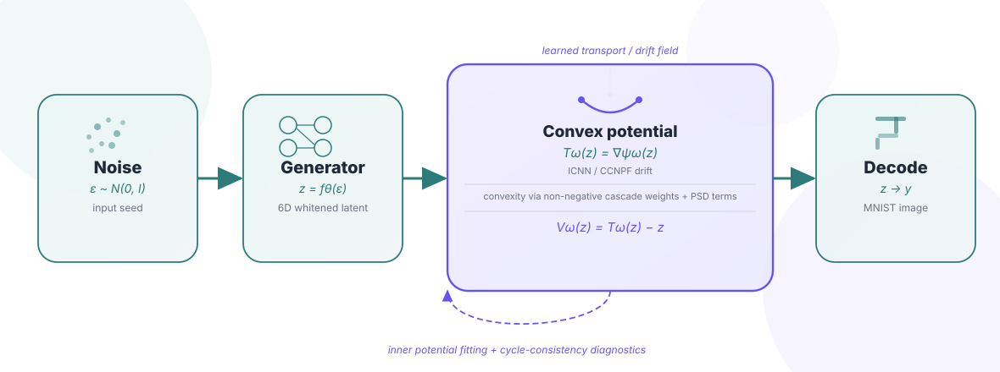
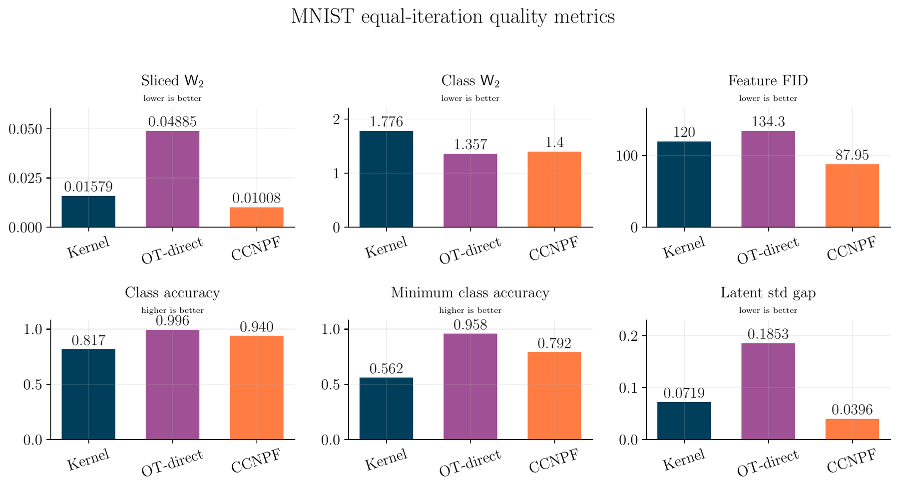
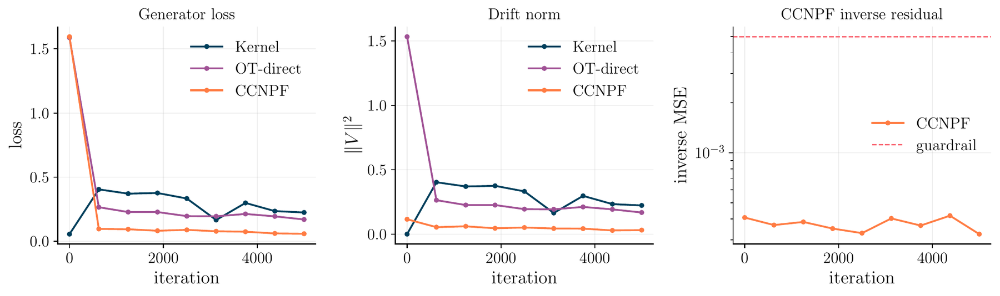
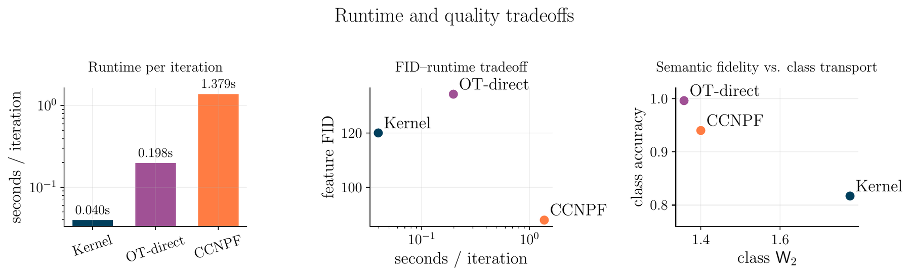

Drifting generative models
The baseline method updates generated samples using a kernel drift. This gives a strong, fast reference point and remains important in our runtime-quality comparison.
CS-503 Visual Intelligence · Final Project
Replacing kernel drift fields with gradients of input-convex neural networks in drifting generative models.
Abstract
Drifting generative models iteratively move generated samples toward the data distribution using a drift field. The original formulation uses a kernel-based drift, which is simple and fast but has limited structure. We study whether this drift can be replaced by the gradient of an input-convex neural network (ICNN), giving a map of the form Tω(z)=∇ψω(z) and a drift Vω(z)=∇ψω(z)-z.
Our final experiments run in a frozen, whitened 6D MNIST VAE latent space and compare kernel drift, direct Sinkhorn OT drift, and our cycle-consistent neural potential field variant (CCNPF). CCNPF achieves the best equal-iteration Sliced W2 score (0.01008), best feature FID (87.95), and best latent standard-deviation gap (0.0396), but it is much slower than the kernel baseline: 1.379 seconds per iteration versus 0.040 seconds. The main conclusion is therefore not only that the convex-potential drift can improve sample quality on this benchmark, but also that its inner optimization cost remains the central limitation.
Introduction
The problem we address is how to learn a drift field for a generator without relying on a hand-designed kernel. A kernel drift is attractive because it is inexpensive and stable, but the resulting vector field is not explicitly constrained to be the gradient of a convex transport potential. In contrast, optimal transport theory tells us that, under a quadratic cost, the optimal map has Brenier structure: it is the gradient of a convex function.
This motivates replacing the kernel drift by an ICNN potential. If the potential is convex in the latent variable, its gradient defines a structured transport map. The practical challenge is that this structure is useful only if the ICNN can be trained stably inside the generator loop. Much of our project therefore focuses on diagnostics: preventing collapse, making the selection metric meaningful, and separating true quality improvements from artifacts of the objective.
Method
We keep the drifting-generator pipeline but replace the drift field by a learned convex potential and evaluate it against two baselines.
MNIST images are encoded by a convolutional VAE. We whiten the encoder means and perform all transport operations in a 6D latent space, decoding only for visualization.
A one-step generator maps Gaussian noise to latent samples. The drift update then moves these generated latents toward the empirical data latent distribution.
The learned map is Tω(z)=∇ψω(z). Non-negative cascade weights and positive semidefinite quadratic terms preserve convexity in the input.
We compare Kernel, OT-direct, and CCNPF using transport metrics, semantic metrics, feature FID, latent moment gaps, training traces, and per-iteration runtime.

Experiments
We evaluate Kernel, OT-direct, and CCNPF at matched outer iterations in the same 6D MNIST latent space. Lower is better for Sliced W2, Class W2, feature FID, and latent std gap; higher is better for accuracy metrics and normalized score.
Mean normalized score across the reported metrics. CCNPF is the strongest overall quality method in this equal-iteration comparison.
Summary view of the mean normalized quality score.
| Method | Sliced W2 ↓ | Class W2 ↓ | Feature FID ↓ | Class acc. ↑ | Min class acc. ↑ | Latent std gap ↓ | sec / iter ↓ | Takeaway |
|---|
CCNPF wins Sliced W2, feature FID, and latent standard-deviation gap. OT-direct is strongest on class accuracy and class transport.

CCNPF keeps the inverse residual below the guardrail and shows stable training traces, supporting the claim that the learned potential remains numerically controlled.

The main cost of CCNPF is runtime: it improves quality but requires a much more expensive iteration than Kernel or OT-direct.

Interactive generation
This section preserves the class-conditional generation demo added by the team. Select a digit and click
Generate: the widget serves samples from the pre-generated
static/data/NPF_MNIST_sample_bank.json bank, with a graceful fallback if a live generation endpoint is added later.
The demo is intentionally lightweight for GitHub Pages: it does not run the model in the browser. Instead, it displays generated CCNPF/ICNN samples that were exported ahead of time, making the final webpage reproducible and fast to load.
Diagnostics
Earlier versions looked good under the old diagnostic but produced collapsed samples. These fixes make the evaluation collapse-aware and the ICNN drift numerically meaningful.
Replaced drift-norm selection with Sliced W2, which penalizes collapse onto the data mean.
Replaced per-axis moment matching with a full covariance penalty to catch off-axis low-rank collapse.
Reset inner Adam per outer batch so momentum from noisy Sinkhorn targets does not leak across objectives.
Compared regression-to-target with a semi-dual plus cycle-consistency variant to reduce target smoothing artifacts.
Shrunk the live cascade at initialization and lowered the quadratic Hessian floor so the cascade can bend early.
Conclusion and limitations
The main takeaway is that a convex-potential drift can be made stable inside a drifting generative model and can outperform the kernel and OT-direct baselines on several MNIST latent-space quality metrics. This supports the hypothesis that adding Brenier-map structure to the drift is useful.
The main limitation is efficiency. CCNPF is more than an order of magnitude slower per iteration than the kernel baseline, so its quality advantage must be weighed against compute. The current evidence is also limited to MNIST in a low-dimensional VAE latent space. Future work should test higher-dimensional latents, add stronger spectral or gradient penalties for the semi-dual potential, and report image-level metrics on more complex datasets such as CIFAR-10 or CelebA.
Individual contributions
The project combined model implementation, diagnostic debugging, evaluation, visualization, and final webpage preparation.
Final webpage, result visualization, evaluation narrative, and integration of the project figures into the submission page.
ICNN/NPF implementation support, model debugging, optimization-stability analysis, and the class-conditional generation demo.
Baseline comparisons, metric computation, diagnostic experiments, and quantitative result analysis.
Repository coordination, experiment pipeline, generator training setup, and report integration.